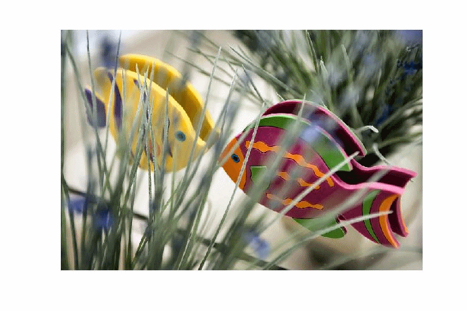
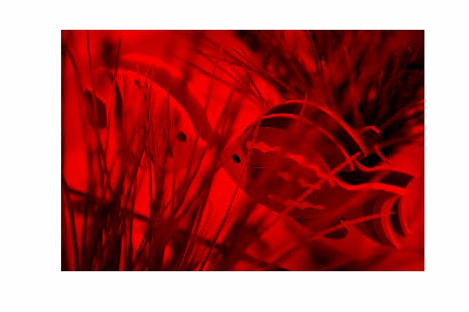
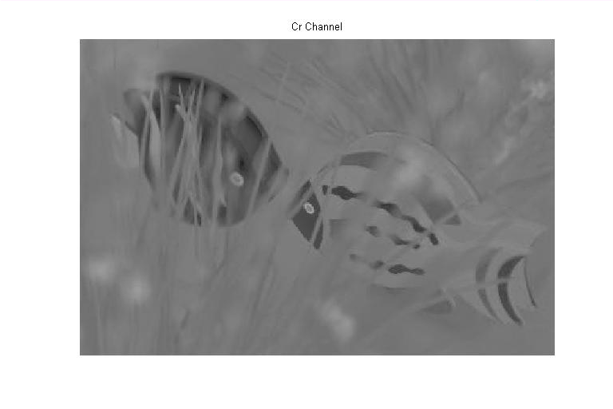
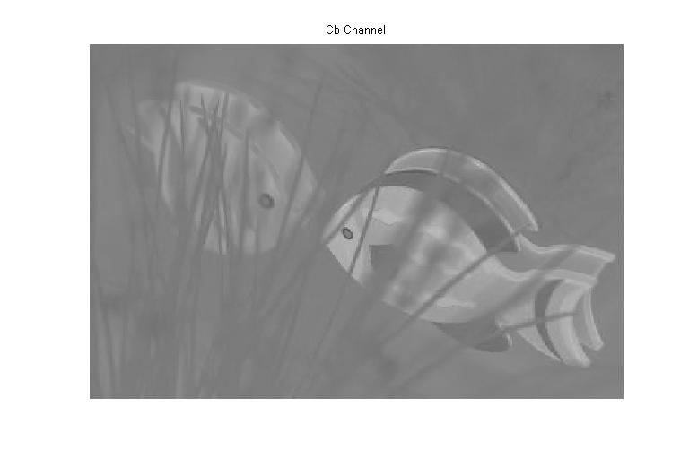

| DiscreteWavelets Toolbox |
Convert from RGB space to YCbCr space
B=RGBToYCbCr(A)
B = RGBToYCbCr(A) takes either a vector of length 3 or a three-dimensional array with depth three and converts the input to YCbCr space.
B = RGBToYCbCr(A,'DisplayMode','True') scales the conversion for display with Matlab's image or ImagePlot.
If A is a length 3 vector, then the elements must be in the interval [0,1].
If A is a three-dimensional array, then its depth must be three and it is assumed that the red, green, and blue channels are contained in A(:,:,1), A(:,:,2), and A(:,:,3), respectively. The elements of A must be nonnegative integers less than or equal to 255. In this case, A is assumed to be a three-dimensional array.See Section 3.2 for more information on color space conversion.
Convert the RGB vectors [0 0 0] (black) and [1 1 1] (white) to YCbCr space.
b=[0 0 0] RGBToYCbCr(b)' w=[1 1 1] RGBToYCbCr(w)'
produces
b =
0 0 0
ans =
0 0 0
w =
1 1 1
ans =
0.0039 0 0
Convert a color image to YCbCr space.
clr=ImageNames('ImageType','Color'); %Get names of all color images included with the toolbox
A=ImageRead(clr{5}); %Read a color image
ImagePlot(A); %Plot the image
[R,G,B]=Split3D(A); %Split A into the three color channels
figure
ImagePlot(R,'ChannelColor',[1 0 0]); %Plot the red channel
figure
ImagePlot(G,'ChannelColor',[0 1 0]); %Plot the green channel
figure
ImagePlot(B,'ChannelColor',[0 0 1]); %Plot the blue channel

Now convert to YCbCr space and plot the resulting images
B=RGBToYCbCr(A,'DisplayMode','True'); %Do the color space conversion [Y,Cb,Cr]=Split3D(B); %Split B into the three channels figure ImagePlot(Y,'Title','Y Channel'); %Plot the Y channel figure ImagePlot(Cb,'Title','Cr Channel'); %Plot the Cr channel figure ImagePlot(Cr,'Title','Cb Channel'); %Plot the Cb channel 
© 2007-2008 Patrick Van Fleet